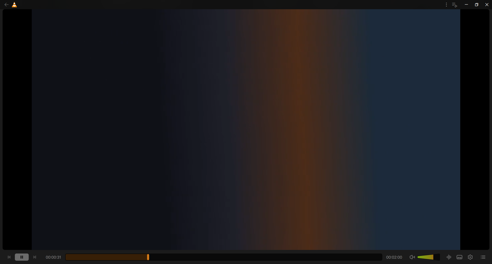

Unofficial · Work in progress
Juxtopposed VLC Redesign
The VLC media player interface, rebuilt in VLC's own Qt/QML to match the Figma design from Juxtopposed's video. Playback, codecs and everything else stay VLC.

What works today
-
Control bar layout
Previous, play and next, the seek bar, volume, audio, subtitles, settings and lists. Positions match Figma within 1 to 2 px.
-
Cone volume slider
The Figma cone with its gradient fill. The end of the cone is VLC's maximum volume.
-
Seek bar and preview
The Figma track and handle. Dragging to the far left reaches 00:00:00, and hovering shows the frame and time above the bar.
-
Windowed video frame
With pinned controls, the video sits in the dark rounded Figma frame.
-
Icons and time labels
The control bar uses the Figma icons, and all 206 are in the repository. Time labels use Inter 15 px in HH:MM:SS.
The audio and subtitles buttons are placed but do nothing yet. They are part of Phase 4.
Roadmap
- Phase 1: Design tokens and foundationsIn progress
- Phase 2: Main playback controls and bottom barIn progress
- Phase 3: Top navigation bar and window chromeNot started
- Phase 4: Audio, subtitle and track management flyoutsNot started
- Phase 5: Quick settings sidebarNot started
- Phase 6: Media library, music player and stream browserNot started
- Phase 7: Settings overhaul and onboardingNot started
The full checklist is in the repository README.
FAQ
Is there a download?
No. There is no prebuilt installer yet. Build it from source using the instructions in the repository. Installers offered on other sites are not from this project.
Is this official?
No. It is not affiliated with or endorsed by VideoLAN or Juxtopposed. For the official player, see videolan.org.
Who designed it?
Juxtopposed (spelled with two p's, not "juxtaposed"), in the video linked above. The layouts, sizes, colours and icons come from the community Figma file "VLC Redesign" shown in that video.
Does it change playback?
No. Only the look and the interface change.
Does it have skins or themes?
No. It changes VLC's built-in Qt interface. It is not a skin or theme pack.
Where are the icons and colours?
The 206 Figma icons are in design/figma-icons, and the colour sheet is in design/palette.